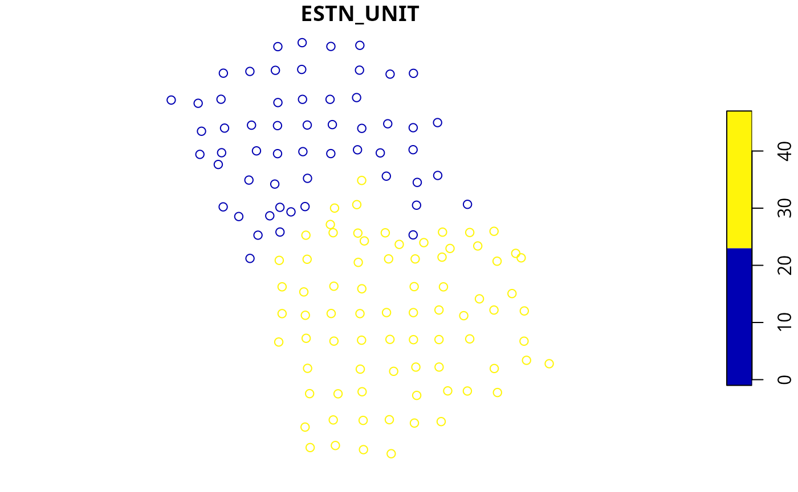
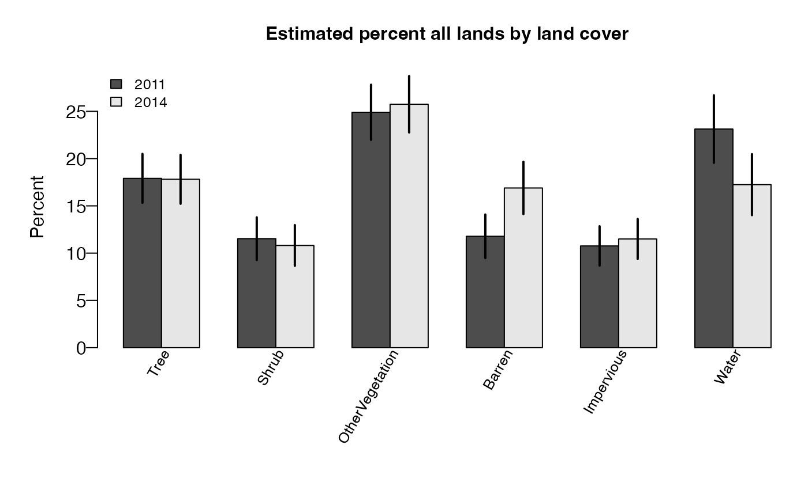
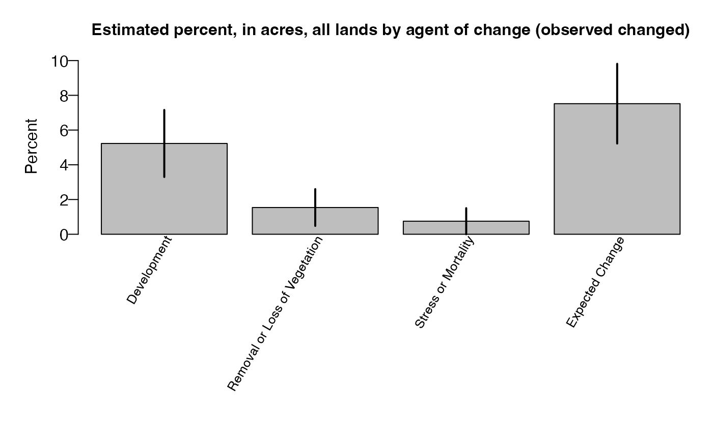
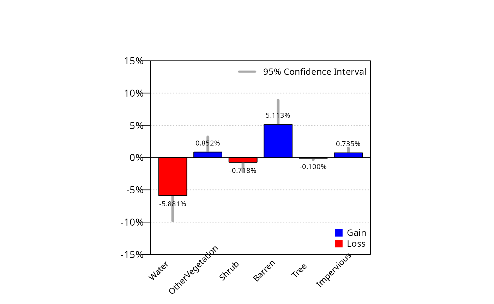
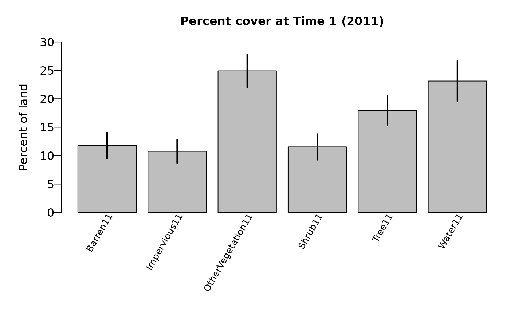

FIESTA’s Photo-Based (PB) module calculates population
estimates and associated sampling errors based on Patterson (2012). In
contrast to FIA’s traditional green-book estimators which were
constructed based on the finite sampling paradigm using sample plots
with distinct area, the photo-based estimators were constructed based on
the context of the infinite sampling paradigm, along with the concept of
a support region. The sample is the set of plot centers and the
information from the support region (the photo plot) are assigned to the
plot centers. The photo interpreted points are used as a sample of the
support region and the observations are used to estimate the information
from the support region. FIESTA includes non-ratio
estimators for area and percent cover estimates by domain, and
ratio-of-means estimators for area and percent cover estimates within
domain, and supports post-stratification for reducing variance.
The main objective of this tutorial is to demonstrate how to use
FIESTA for generating photo-based estimates, supplementary
to FIA’s traditional estimates, using estimators from Patterson (2012).
For information on FIESTA parameters or population data,
please see the FIESTA_manual_mod_est and
FIESTA_manual_mod_pop vignettes. The structure of this
vignette is as follows:
Estimates with percent sampling error for the row domain (and column
domain) specified by the input parameters. This can be in the form of
one table or two separate tables, depending on the number of domains and
on allin1 parameter specified through the
table_opts parameter.
FIESTA returns a list object with one or more of the
following components. If savedata = TRUE, all output data
frames are written to the specified outfolder.
rowvar, colvar (and estimation unit). If
sumunits = TRUE or one estimation unit and
colvar = NULL, estimates and percent sampling error are all
in est.returntitle = TRUE, a
list with one or two titles for est and pse, depending on number of
output data frames.rawdata = TRUE, a list of
raw data used in the estimation process.rawdata = TRUE)
tabtype = "AREA").| Variable | Description |
|---|---|
| ESTN_UNIT | Estimation unit |
| STRATUMCD | Strata value |
| P1POINTCNT | Number of pixels by strata and estimation unit |
| n.strata | Number of plots in strata (and estimation unit) |
| n.total | Number of plots for estimation unit |
| ACRES | Total acres for estimation unit |
| strwt | Summed proportions by strata and estimation unit |
| Variable | Description |
|---|---|
| ESTN_UNIT | Estimation unit |
| STRATUMCD | Strata value |
| plot_id | Unique identifier for ICE plot |
| category | Category (domain) for estimation |
| nbrpts.pltdom | Number of points by category (domain) |
| PtsPerPlot | Number of points interpreted |
| p.pltdom | Proportion of plot by category |
rawdata = TRUE)
Separate data frames with calculated variables used in estimation process. The number of processing tables depends on the input parameters. The tables include:
And, if sumunits = TRUE, the raw data for the summed
estimation units are also included: (totest,
rowest, colest, grpest,
respectively). These tables do not included estimate proportions
(nhat and nhat.var). See below for
variable descriptions of summed estimation units:
| Variable | Description |
|---|---|
| phat | Estimated proportion of land |
| phat.var | Variance estimate of estimated proportion of land |
| phat.se | Standard error of estimated proportion of land { sqrt(phat.var) } |
| phat.cv | Coefficient of variance of estimated proportion of land { phat.se/phat } |
| est | Estimated percent cover of land { phat*100 } |
| est.var | Variance of estimated percent cover of land { phat.var*100^2 } |
| Variable | Description |
|---|---|
| phat.n | Estimated proportion of land, for numerator |
| phat.var.n | Variance of estimated proportion of land, for numerator |
| phat.d | Estimated proportion of land, for denominator |
| phat.var.d | Variance of estimated proportion of land, for denominator |
| covar | Covariance of estimated proportion of numerator and denominator |
| rhat | Ratio of estimated proportions (numerator/denominator) |
| rhat.var | Variance of ratio of estimated proportions |
| rhat.se | Standard error of ratio of estimated proportions { rhat.se/rhat } |
| rhat.cv | Coefficient of variation of ratio of estimated proportions { sqrt(rhat.var) } |
| est | Estimated percent cover of land { rhat*100 } |
| est.var | Variance of estimated percent cover of land { rhat.var*100^2 } |
| Variable | Description |
|---|---|
| nbrpts | Number of points used in estimate |
| ACRES | Total acres for estimation unit (if tabtype=‘AREA’) |
| est.se | Standard error of estimated percent cover of land { sqrt(est.var) } |
| est.cv | Coefficient of variance of estimated percent cover of land { est.se/est } |
| pse | Percent sampling error of the estimated percent cover of land { est.cv*100 } |
| Variable | Description |
|---|---|
| CI99left | Left tail of 99% confidence interval for estimate { est - (2.58*est.se) } |
| CI99right | Right tail of 99% confidence interval for estimate { est + (2.58*est.se) } |
| CI95left | Left tail of 95% confidence interval for estimate { est - (1.96*est.se) } |
| CI95right | Right tail of 95% confidence interval for estimate { est + (1.96*est.se) } |
| CI68left | Left tail of 68% confidence interval for estimate { est - (0.97*est.se) } |
| CI68right | Right tail of 68% confidence interval for estimate { est + (0.97*est.se) } |
The examples following use data from the Image-Based Change Estimation (ICE) project, from two counties, or Estimation Units (ESTN_UNIT) in the state of Utah: Davis (11); Salt Lake (35).
The ICE project is an image-based inventory across FIA plots designed
to supplement the FIA field-based inventory for monitoring land use and
land cover change at a more timely interval than the current FIA
reporting timeframe. Observations are made at two points in time across
all FIA plots and point-level interpretations are made within an acre
support region from plot center. Attributes of land use, land cover,
change, and agent of change are recorded at each point. The dataset
includes plot-level and point-level data for each plot in the sample.
The following tutorial uses a subset of ICE data to demonstrate how to
generate estimates from the modPB() function.
| External data | Description |
|---|---|
| icepnt_utco1135.csv | ICE point-level data (see ref_icepnt R data frame for variable descriptions) |
| icepctcover_utco1135.csv | ICE plot-level percentages of land cover |
| icepltassgn_utco1135.csv | ICE plot-level data, including estimation unit and strata variables |
| cover_LUT.csv | ICE look-up table for land cover classes |
| chg_ag_LUT.csv | ICE look-up table for change agent classes |
| unitarea_utco1135.csv | Area, in acres, by county estimation unit (ESTN_UNIT) |
| strlut_utco1135.csv | Pixel counts by strata (STRATUMCD) and estimation unit (ESTN_UNIT) |
First, you’ll need to load the FIESTA library:
Next, you’ll need to set up an “outfolder”. This is just a file path
to a folder where you’d like FIESTA to send your data
output. For our purposes in this vignette, we have saved our outfolder
file path as the outfolder object in a temporary directory.
We also set a few default options preferred for this vignette.
outfolder <- tempdir()Now that we’ve loaded FIESTA and setup our outfolder, we
can retrieve the data needed to run the examples. First, we point to
some external data stored in FIESTA and import into R.
## Get external data file names
icepntfn <- system.file("extdata", "PB_data/icepnt_utco1135.csv", package = "FIESTA")
icepltfn <- system.file("extdata", "PB_data/icepltassgn_utco1135.csv", package = "FIESTA")
icepctcoverfn <- system.file("extdata", "PB_data/icepctcover_utco1135.csv", package = "FIESTA")
icechg_agfn <- system.file("extdata", "PB_data/chg_ag_LUT.csv", package = "FIESTA")
icecoverfn <- system.file("extdata", "PB_data/cover_LUT.csv", package = "FIESTA")
unitareafn <- system.file("extdata", "PB_data/unitarea_utco1135.csv", package = "FIESTA")
strlutfn <- system.file("extdata", "PB_data/strlut_utco1135.csv", package = "FIESTA")
icepnt <- read.csv(icepntfn)
iceplt <- read.csv(icepltfn)
icepctcover <- read.csv(icepctcoverfn)
icecover <- read.csv(icecoverfn)
icechg_ag <- read.csv(icechg_agfn)
str(icepnt, max.level = 1)## 'data.frame': 1305 obs. of 8 variables:
## $ plot_id : num 5.54e+12 5.54e+12 5.54e+12 5.54e+12 5.54e+12 ...
## $ dot_cnt : int 1 26 31 36 41 1 26 31 36 41 ...
## $ change_1_2: int 0 0 0 0 0 0 0 0 0 0 ...
## $ cover_1 : int 310 310 310 310 310 140 220 140 220 140 ...
## $ cover_2 : int 310 310 310 310 310 140 220 140 220 140 ...
## $ use_1 : int 200 200 200 200 200 400 400 400 400 400 ...
## $ use_2 : int 200 200 200 200 200 400 400 400 400 400 ...
## $ chg_ag_2 : int 0 0 0 0 0 0 0 0 0 0 ...
str(iceplt, max.level = 1)## 'data.frame': 133 obs. of 5 variables:
## $ plot_id : num 5.54e+12 5.54e+12 5.54e+12 5.54e+12 5.54e+12 ...
## $ ESTN_UNIT : int 11 11 11 11 11 11 11 35 35 35 ...
## $ STRATUMCD : int 2 2 2 2 2 2 2 2 1 2 ...
## $ LON_PUBLIC: num -112 -112 -112 -112 -112 ...
## $ LAT_PUBLIC: num 41 41.1 41 41 41 ...
str(icepctcover, max.level = 1)## 'data.frame': 133 obs. of 15 variables:
## $ plot_id : num 5.54e+12 5.54e+12 5.54e+12 5.54e+12 5.54e+12 ...
## $ Change : int 0 0 0 0 0 0 0 0 0 1 ...
## $ Tree11 : int 0 0 0 0 0 0 40 20 0 0 ...
## $ Shrub11 : int 0 0 20 0 0 0 0 80 0 0 ...
## $ OtherVegetation11: int 0 60 60 0 0 0 60 0 100 27 ...
## $ Barren11 : int 0 0 20 0 0 0 0 0 0 56 ...
## $ Impervious11 : int 0 40 0 0 0 0 0 0 0 18 ...
## $ Water11 : int 100 0 0 100 100 100 0 0 0 0 ...
## $ Tree14 : int 0 0 0 0 0 0 40 20 0 0 ...
## $ Shrub14 : int 0 0 20 0 0 0 0 80 0 0 ...
## $ OtherVegetation14: int 0 60 60 0 0 0 60 0 100 24 ...
## $ Barren14 : int 0 0 20 100 100 0 0 0 0 36 ...
## $ Impervious14 : int 0 40 0 0 0 0 0 0 0 40 ...
## $ Water14 : int 100 0 0 0 0 100 0 0 0 0 ...
## $ Veg.NonVeg : int 0 0 0 0 0 0 0 0 0 3 ...Next, we can convert X/Y coordinates to a simple feature and look at
the spatial distribution by county (ESTN_UNIT) with the
spMakeSpatialPoints() function from
FIESTA.
icepltsp <- spMakeSpatialPoints(xyplt = iceplt,
xy.uniqueid = "plot_id",
xvar = "LON_PUBLIC",
yvar = "LAT_PUBLIC",
xy.crs = 4269)
plot(icepltsp["ESTN_UNIT"])
Now, let’s look at the look up tables stored in FIESTA
for land use cover codes and change agent codes and create new lookup
tables for Time 1 and Time 2 land use cover.
icecover## cover cover_nm
## 1 110 Tree
## 2 130 Shrub
## 3 140 OtherVegetation
## 4 210 Barren
## 5 220 Impervious
## 6 310 Water
## 7 999 Uninterpretable
icechg_ag## chg_ag_2 chg_ag_2_nm
## 1 0 No Change
## 2 11 Development
## 3 21 Harvest (Forested: >10% canopy cover visible on T2)
## 4 22 Harvest (Forested: <10% canopy cover visible on T2)
## 5 31 Regeneration of Vegetation
## 6 33 Removal or Loss of Vegetation
## 7 34 Stress or Mortality
## 8 41 Fire
## 9 90 Expected Change
## 10 91 Other Change
## 11 99 Uninterpretable
# Create look-up tables for Time 1 (cover_11) and Time 2 (cover_14) classes
icecover_1 <- icecover
names(icecover_1) <- sub("cover", "cover_1", names(icecover_1))
icecover_2 <- icecover
names(icecover_2) <- sub("cover", "cover_2", names(icecover_2))
icecover_1## cover_1 cover_1_nm
## 1 110 Tree
## 2 130 Shrub
## 3 140 OtherVegetation
## 4 210 Barren
## 5 220 Impervious
## 6 310 Water
## 7 999 Uninterpretable
icecover_2## cover_2 cover_2_nm
## 1 110 Tree
## 2 130 Shrub
## 3 140 OtherVegetation
## 4 210 Barren
## 5 220 Impervious
## 6 310 Water
## 7 999 UninterpretableNext, let’s import and look at the stratification information stored
in FIESTA.
## Area by estimation unit
unitarea <- read.csv(unitareafn)
unitarea## ESTN_UNIT ACRES
## 1 11 405566
## 2 35 516977
## Pixel counts by strata classes
strlut <- read.csv(strlutfn)
strlut## ESTN_UNIT STRATUMCD P1POINTCNT
## 1 11 2 26266
## 2 35 1 9050
## 3 35 2 24432The following examples are set up into two sections as follows
where modPBpop() contains an example which sets up the data for estimation in modPB().
FIESTA’s population functions (mod*pop)
check input data and perform population-level calculations, such as:
summing number of sampled plots and standardizing auxiliary data. These
functions are specific to each FIESTA module and are run
prior to or within a module for any population of interest.
These population data are used in: Example 1.
For FIESTA’s PB Module, the modPBpop()
function calculates and outputs: number of plots by strata. The output
from modPBpop() can be used for one or more estimates from
modPB(). Here, we set up our population data for the
following examples. We simply supply a few key arguments and we have our
population data:
# Percent land cover at Time 1 (2011) for all land in Davis and Salt Lake Counties, UT
PBpopdat <- modPBpop(pnt = icepnt,
pltassgn = iceplt,
pltassgnid = "plot_id",
pntid = "dot_cnt")
names(PBpopdat)## [1] "PBx" "pltassgnx" "plotid" "pntid" "pltassgnid"
## [6] "sumunits" "unitvar" "unitvars" "strata" "strtype"
## [11] "stratalut" "strvar" "strwtvar" "plotsampcnt" "getprop"Note that the modPBpop() function returns a list with
lots of information and data for us to use. For a quick look at what
this list includes we can use the str() function:
str(PBpopdat, max.level = 1)## List of 15
## $ PBx :Classes 'data.table' and 'data.frame': 1305 obs. of 12 variables:
## ..- attr(*, ".internal.selfref")=<externalptr>
## ..- attr(*, "sorted")= chr [1:2] "plot_id" "dot_cnt"
## $ pltassgnx :Classes 'data.table' and 'data.frame': 133 obs. of 3 variables:
## ..- attr(*, ".internal.selfref")=<externalptr>
## ..- attr(*, "sorted")= chr "plot_id"
## $ plotid : chr "plot_id"
## $ pntid : chr "dot_cnt"
## $ pltassgnid : chr "plot_id"
## $ sumunits : logi FALSE
## $ unitvar : chr "ONEUNIT"
## $ unitvars : chr "ONEUNIT"
## $ strata : logi FALSE
## $ strtype : chr "POST"
## $ stratalut :Classes 'data.table' and 'data.frame': 1 obs. of 5 variables:
## ..- attr(*, ".internal.selfref")=<externalptr>
## ..- attr(*, "sorted")= chr [1:2] "ONEUNIT" "ONESTRAT"
## $ strvar : chr "ONESTRAT"
## $ strwtvar : chr "strwt"
## $ plotsampcnt: NULL
## $ getprop : logi TRUENow that we’ve created our population dataset, we can move on to estimation.
These population data are used in: Example 2, Example 3, Example 4, Example 5, Example 7, and Example 8.
Here we create population data in order to estimate area, in acres, of land cover at Time 1 (2011) for all land in Davis and Salt Lake Counties, Utah.
First, since we want to get estimates for the total population, let’s sum the area for both counties.
## [1] 922543Next, we add the total area to the modPBpop function
PBpoparea <- modPBpop(pnt = icepnt,
pltassgn = iceplt,
pltassgnid = "plot_id",
pntid = "dot_cnt",
unitarea = sum(unitarea$ACRES)) # using the total number of acresWe can look at the contents of the output list. The output now includes unitarea, the total acres for the population of two counties.
str(PBpoparea, max.level = 1)## List of 18
## $ PBx :Classes 'data.table' and 'data.frame': 1305 obs. of 12 variables:
## ..- attr(*, ".internal.selfref")=<externalptr>
## ..- attr(*, "sorted")= chr [1:2] "plot_id" "dot_cnt"
## $ pltassgnx :Classes 'data.table' and 'data.frame': 133 obs. of 3 variables:
## ..- attr(*, ".internal.selfref")=<externalptr>
## ..- attr(*, "sorted")= chr "plot_id"
## $ plotid : chr "plot_id"
## $ pntid : chr "dot_cnt"
## $ pltassgnid : chr "plot_id"
## $ sumunits : logi FALSE
## $ unitvar : chr "ONEUNIT"
## $ unitvars : chr "ONEUNIT"
## $ strata : logi FALSE
## $ strtype : chr "POST"
## $ stratalut :Classes 'data.table' and 'data.frame': 1 obs. of 5 variables:
## ..- attr(*, ".internal.selfref")=<externalptr>
## ..- attr(*, "sorted")= chr [1:2] "ONEUNIT" "ONESTRAT"
## $ strvar : chr "ONESTRAT"
## $ strwtvar : chr "strwt"
## $ plotsampcnt: NULL
## $ getprop : logi TRUE
## $ unitarea :Classes 'data.table' and 'data.frame': 1 obs. of 2 variables:
## ..- attr(*, ".internal.selfref")=<externalptr>
## ..- attr(*, "sorted")= chr "ONEUNIT"
## $ areavar : chr "AREA"
## $ areaunits : chr "acres"These population data are used in: Example 6.
Here, we generate population data in order to produce estimates by each estimation unit (i.e, County).
PBpopunit <- modPBpop(pnt = icepnt,
pltassgn = iceplt,
pltassgnid = "plot_id",
pntid = "dot_cnt",
unitarea = unitarea,
unitvar = "ESTN_UNIT")
names(PBpopunit)## [1] "PBx" "pltassgnx" "plotid" "pntid" "pltassgnid"
## [6] "sumunits" "unitvar" "unitvars" "strata" "strtype"
## [11] "stratalut" "strvar" "strwtvar" "plotsampcnt" "getprop"
## [16] "unitarea" "areavar" "areaunits"Again, we can look at the contents of the output list.
str(PBpopunit, max.level = 1)## List of 18
## $ PBx :Classes 'data.table' and 'data.frame': 1305 obs. of 11 variables:
## ..- attr(*, ".internal.selfref")=<externalptr>
## ..- attr(*, "sorted")= chr [1:2] "plot_id" "dot_cnt"
## $ pltassgnx :Classes 'data.table' and 'data.frame': 133 obs. of 3 variables:
## ..- attr(*, ".internal.selfref")=<externalptr>
## ..- attr(*, "sorted")= chr "plot_id"
## $ plotid : chr "plot_id"
## $ pntid : chr "dot_cnt"
## $ pltassgnid : chr "plot_id"
## $ sumunits : logi FALSE
## $ unitvar : chr "ESTN_UNIT"
## $ unitvars : chr "ESTN_UNIT"
## $ strata : logi FALSE
## $ strtype : chr "POST"
## $ stratalut :Classes 'data.table' and 'data.frame': 2 obs. of 5 variables:
## ..- attr(*, ".internal.selfref")=<externalptr>
## ..- attr(*, "sorted")= chr [1:2] "ESTN_UNIT" "ONESTRAT"
## $ strvar : chr "ONESTRAT"
## $ strwtvar : chr "strwt"
## $ plotsampcnt: NULL
## $ getprop : logi TRUE
## $ unitarea :Classes 'data.table' and 'data.frame': 2 obs. of 2 variables:
## ..- attr(*, ".internal.selfref")=<externalptr>
## ..- attr(*, "sorted")= chr "ESTN_UNIT"
## $ areavar : chr "ACRES"
## $ areaunits : chr "acres"These population data are used in: Example 9.
Here, we set up population data for both times, and population data for transitions.
Let’s first take a look at the first six rows of the example dataset, including 133 plot records.
head(icepctcover)## plot_id Change Tree11 Shrub11 OtherVegetation11 Barren11 Impervious11
## 1 5.540684e+12 0 0 0 0 0 0
## 2 5.540696e+12 0 0 0 60 0 40
## 3 5.540708e+12 0 0 20 60 20 0
## 4 5.540720e+12 0 0 0 0 0 0
## 5 5.540732e+12 0 0 0 0 0 0
## 6 5.540744e+12 0 0 0 0 0 0
## Water11 Tree14 Shrub14 OtherVegetation14 Barren14 Impervious14 Water14
## 1 100 0 0 0 0 0 100
## 2 0 0 0 60 0 40 0
## 3 0 0 20 60 20 0 0
## 4 100 0 0 0 100 0 0
## 5 100 0 0 0 100 0 0
## 6 100 0 0 0 0 0 100
## Veg.NonVeg
## 1 0
## 2 0
## 3 0
## 4 0
## 5 0
## 6 0
dim(icepctcover)## [1] 133 15Then, rename columns for Time 1 cover (names11) and Time 2 cover (names14)
names11 <- names(icepctcover)[endsWith(names(icepctcover), "11")]
names14 <- names(icepctcover)[endsWith(names(icepctcover), "14")]
names11## [1] "Tree11" "Shrub11" "OtherVegetation11"
## [4] "Barren11" "Impervious11" "Water11"
names14## [1] "Tree14" "Shrub14" "OtherVegetation14"
## [4] "Barren14" "Impervious14" "Water14"Population Data for Time 1 (2011)
Now, we need to create a new set of population data define the names of the columns to estimate (i.e., names11). Remember to add unitarea if you want to generate estimates of area.
Let’s look at the contents of the output list.
str(PBpctpop11, max.level = 1)## List of 19
## $ PBx :Classes 'data.table' and 'data.frame': 798 obs. of 3 variables:
## ..- attr(*, ".internal.selfref")=<externalptr>
## ..- attr(*, "sorted")= chr "plot_id"
## $ pltassgnx :Classes 'data.table' and 'data.frame': 133 obs. of 3 variables:
## ..- attr(*, ".internal.selfref")=<externalptr>
## ..- attr(*, "sorted")= chr "plot_id"
## $ plotid : chr "plot_id"
## $ pntid : NULL
## $ pltassgnid : chr "plot_id"
## $ sumunits : logi FALSE
## $ unitvar : chr "ONEUNIT"
## $ unitvars : chr "ONEUNIT"
## $ strata : logi FALSE
## $ strtype : chr "POST"
## $ stratalut :Classes 'data.table' and 'data.frame': 1 obs. of 5 variables:
## ..- attr(*, ".internal.selfref")=<externalptr>
## ..- attr(*, "sorted")= chr [1:2] "ONEUNIT" "ONESTRAT"
## $ strvar : chr "ONESTRAT"
## $ strwtvar : chr "strwt"
## $ plotsampcnt: NULL
## $ getprop : logi FALSE
## $ unitarea :Classes 'data.table' and 'data.frame': 1 obs. of 2 variables:
## ..- attr(*, ".internal.selfref")=<externalptr>
## ..- attr(*, "sorted")= chr "ONEUNIT"
## $ areavar : chr "AREA"
## $ areaunits : chr "acres"
## $ rowvar : chr "variable"Population Data for Time 2 (2014)
For 2014, we need to create a new population data set with the names14 columns before calculating estimates.
Population Data for Transitions
Let’s also look at transitions. In the example which uses this population data we will generate estimates of percent land cover change from vegetated to non-vegetated for all land in Davis and Salt Lake Counties, Utah. This transition was recorded in the initial dataset (i.e., Veg.NonVeg). Again, we need to create a new population dataset defining this column of interest.
These population data are used in Example 10.
Our final population dataset for this vignette adds post-stratification for transition estimates.
Let’s add post-stratification to our transition estimates from Time 1 to Time 2. Again, we need to create a new population dataset with information for post-stratification, including strata pixel counts and plot-level strata assignments. This information is provided with FIESTA’s external data.
## Plot-level assignments
head(iceplt)## plot_id ESTN_UNIT STRATUMCD LON_PUBLIC LAT_PUBLIC
## 1 5.540684e+12 11 2 -112.3625 40.96010
## 2 5.540696e+12 11 2 -112.0733 41.14085
## 3 5.540708e+12 11 2 -111.8916 41.00477
## 4 5.540720e+12 11 2 -112.0735 40.96141
## 5 5.540732e+12 11 2 -112.1912 41.00827
## 6 5.540744e+12 11 2 -112.2082 40.85725## ESTN_UNIT STRATUMCD P1POINTCNT
## 1 11 2 26266
## 2 35 1 9050
## 3 35 2 24432Here we use the strata_opts parameter to calculate the
strata weights from the pixel count information in
strlutfn
PBpopareaPS <- modPBpop(pntdat = icepnt,
pltassgn = iceplt,
pltassgnid = "plot_id",
pntid = "dot_cnt",
strata = TRUE,
stratalut = strlutfn,
strvar = "STRATUMCD",
strata_opts = list(getwt=TRUE,
getwtvar="P1POINTCNT"),
unitarea = sum(unitarea$ACRES))Let’s look at the contents of the output list.
str(PBpopareaPS, max.level = 1)## List of 18
## $ PBx :Classes 'data.table' and 'data.frame': 1305 obs. of 11 variables:
## ..- attr(*, ".internal.selfref")=<externalptr>
## ..- attr(*, "sorted")= chr [1:2] "plot_id" "dot_cnt"
## $ pltassgnx :Classes 'data.table' and 'data.frame': 133 obs. of 3 variables:
## ..- attr(*, ".internal.selfref")=<externalptr>
## ..- attr(*, "sorted")= chr "plot_id"
## $ plotid : chr "plot_id"
## $ pntid : chr "dot_cnt"
## $ pltassgnid : chr "plot_id"
## $ sumunits : logi FALSE
## $ unitvar : chr "ONEUNIT"
## $ unitvars : chr "ONEUNIT"
## $ strata : logi TRUE
## $ strtype : chr "POST"
## $ stratalut :Classes 'data.table' and 'data.frame': 2 obs. of 6 variables:
## ..- attr(*, ".internal.selfref")=<externalptr>
## ..- attr(*, "sorted")= chr [1:2] "ONEUNIT" "STRATUMCD"
## $ strvar : chr "STRATUMCD"
## $ strwtvar : chr "strwt"
## $ plotsampcnt: NULL
## $ getprop : logi TRUE
## $ unitarea :Classes 'data.table' and 'data.frame': 1 obs. of 2 variables:
## ..- attr(*, ".internal.selfref")=<externalptr>
## ..- attr(*, "sorted")= chr "ONEUNIT"
## $ areavar : chr "AREA"
## $ areaunits : chr "acres"And look more closely at the resulting stratalut.
PBpopareaPS$stratalut## Key: <ONEUNIT, STRATUMCD>
## ONEUNIT STRATUMCD P1POINTCNT n.total n.strata strwt
## <fctr> <char> <num> <int> <int> <num>
## 1: 1 1 9050 133 18 0.1514695
## 2: 1 2 50698 133 115 0.8485305Now, of course we can make the same population dataset without strata. We do so below.
modPB
In this example, we look at estimating the percent land cover at Time 1 (2011) and land cover at Time 2 (2014) for all land in Davis and Salt Lake Counties, Utah. We will then compare the net change from Time 1 and Time 2. We use population data from Population Example 1.
We first estimate the percent land cover at Time 1 (2011) for all land in Davis and Salt Lake Counties, Utah. We will add a lookup table for the rows to get row names. Adding row.add0=TRUE in table_opts list assures that all categories in rowlut are included in the result. We can also add a pretty name to the output names.
cover1 <- modPB(PBpopdat = PBpopdat,
rowvar = "cover_1",
table_opts = list(rowlut = icecover_1,
row.add0 = TRUE),
title_opts = list(title.rowvar = "Land Cover (2011)"))We can look at the structure of this output with str.
Note that again FIESTA outputs a list.
str(cover1, max.level = 2)## List of 2
## $ est:'data.frame': 8 obs. of 3 variables:
## ..$ Land Cover (2011) : chr [1:8] "Tree" "Shrub" "OtherVegetation" "Barren" ...
## ..$ Estimate : chr [1:8] "17.6" "11.5" "24.9" "11.8" ...
## ..$ Percent Sampling Error: chr [1:8] "14.36" "19.6" "11.72" "19.53" ...
## $ raw:List of 8
## ..$ unit_totest:'data.frame': 1 obs. of 15 variables:
## ..$ unit_rowest:'data.frame': 7 obs. of 17 variables:
## ..$ module : chr "PB"
## ..$ esttype : chr "AREA"
## ..$ PBmethod : chr "HT"
## ..$ strtype : chr "POST"
## ..$ rowvar : chr "cover_1_nm"
## ..$ pltdom.row :Classes 'data.table' and 'data.frame': 233 obs. of 7 variables:
## .. ..- attr(*, ".internal.selfref")=<externalptr>
## .. ..- attr(*, "sorted")= chr "plot_id"…and the estimates.
str(cover1$est, max.level = 2)## 'data.frame': 8 obs. of 3 variables:
## $ Land Cover (2011) : chr "Tree" "Shrub" "OtherVegetation" "Barren" ...
## $ Estimate : chr "17.6" "11.5" "24.9" "11.8" ...
## $ Percent Sampling Error: chr "14.36" "19.6" "11.72" "19.53" ...The raw list shows more details of the estimates for row
totals. See help(modPB) for variable descriptions.
cover1$raw$unit_rowest## ONEUNIT Land Cover (2011) phat phat.var NBRPNTS cover_1 est
## 1 1 Tree 0.176106934 6.395688e-04 166 110 17.6106934
## 2 1 Shrub 0.115288221 5.104315e-04 122 130 11.5288221
## 3 1 OtherVegetation 0.248955723 8.518918e-04 426 140 24.8955723
## 4 1 Barren 0.117794486 5.292122e-04 233 210 11.7794486
## 5 1 Impervious 0.107602339 4.350856e-04 124 220 10.7602339
## 6 1 Water 0.231244779 1.280138e-03 232 310 23.1244779
## 7 1 Uninterpretable 0.003007519 9.045169e-06 2 999 0.3007519
## est.var est.se est.cv pse CI99left CI99right CI95left
## 1 6.39568847 2.5289698 0.1436042 14.36042 11.096499 24.124888 12.654004
## 2 5.10431543 2.2592732 0.1959674 19.59674 5.709320 17.348324 7.100728
## 3 8.51891761 2.9187185 0.1172385 11.72385 17.377452 32.413693 19.174989
## 4 5.29212198 2.3004613 0.1952945 19.52945 5.853853 17.705044 7.270627
## 5 4.35085587 2.0858705 0.1938499 19.38499 5.387387 16.133080 6.672003
## 6 12.80138483 3.5779023 0.1547236 15.47236 13.908412 32.340543 16.111918
## 7 0.09045169 0.3007519 1.0000000 100.00000 0.000000 1.075437 0.000000
## CI95right CI68left CI68right
## 1 22.5673832 15.095739403 20.125647
## 2 15.9569162 9.282070002 13.775574
## 3 30.6161554 21.993029656 27.798115
## 4 16.2882698 9.491736793 14.067160
## 5 14.8484650 8.685923525 12.834544
## 6 30.1370375 19.566404719 26.682551
## 7 0.8902147 0.001666802 0.599837We can also look at the domain-level data used for generating the estimates, with proportion of points by category.
head(cover1$raw$pltdom.row)## Key: <plot_id>
## ONEUNIT ONESTRAT plot_id cover_1_nm nbrpts.pltdom PtsPerPlot
## <fctr> <num> <char> <char> <int> <int>
## 1: 1 1 11940039010690 Water 5 5
## 2: 1 1 11940051010690 OtherVegetation 3 5
## 3: 1 1 11940051010690 Shrub 1 5
## 4: 1 1 11940051010690 Barren 1 5
## 5: 1 1 11940063010690 Water 5 5
## 6: 1 1 11940075010690 OtherVegetation 2 5
## p.pltdom
## <num>
## 1: 1.0
## 2: 0.6
## 3: 0.2
## 4: 0.2
## 5: 1.0
## 6: 0.4Note: An Uninterpretable class is included in the previous table. To remove, add nonsamp.pntfilter. Let’s return a list of titles that are generated automatically.
cover1 <- modPB(PBpopdat = PBpopdat,
rowvar = "cover_1",
nonsamp.pntfilter = "cover_1 != 999", # added filter
table_opts = list(rowlut = icecover_1),
title_opts = list(title.rowvar = "Land Cover (2011)"),
returntitle = TRUE)
cover1$est## Land Cover (2011) Estimate Percent Sampling Error
## 1 Tree 17.9 14.43
## 2 Shrub 11.5 19.6
## 3 OtherVegetation 24.9 11.72
## 4 Barren 11.8 19.53
## 5 Impervious 10.8 19.38
## 6 Water 23.1 15.47
## 7 Total Total TotalIn this example, we estimate area, in acres, of land cover at Time 1 (2011) for all land in Davis and Salt Lake Counties, Utah. Note: since we are adding area, we require a new set of population data to include area information. This new population data was generated in Population Example 2
Now, let’s get the estimates, adding tabtype = "AREA",
to indicate we want area estimates.
cover1.area <- modPB(PBpopdat = PBpoparea,
tabtype = "AREA",
rowvar = "cover_1",
nonsamp.pntfilter = "cover_1 != 999",
table_opts = list(rowlut = icecover_1),
title_opts = list(title.rowvar = "Land Cover (2011)"))Again, we can look at the contents of the output list.
str(cover1.area, max.level = 1)## List of 2
## $ est:'data.frame': 7 obs. of 3 variables:
## $ raw:List of 9And the estimates:
## Estimate and percent sampling error of estimate
cover1.area$est## Land Cover (2011) Estimate Percent Sampling Error
## 1 Tree 165240.8 14.43
## 2 Shrub 106358.3 19.6
## 3 OtherVegetation 229672.4 11.72
## 4 Barren 108670.5 19.53
## 5 Impervious 99267.8 19.38
## 6 Water 213333.3 15.47
## 7 Total Total TotalWe can now use the PBpoparea set of population data to
run percent estimates as well. Let’s save the data to the outfolder and
return titles as well. Note: Saving data adds a new folder in outfolder
that includes rawdata files.
cover1.pct <- modPB(PBpopdat = PBpoparea,
tabtype = "PCT",
rowvar = "cover_1",
nonsamp.pntfilter = "cover_1 != 999",
table_opts = list(rowlut = icecover_1),
title_opts = list(title.rowvar = "Land Cover (2011)"),
returntitle = TRUE,
savedata = TRUE,
savedata_opts = list(outfolder = outfolder))Again, we can look at the contents of the output list. The output now
includes titlelst, a list of associated titles.
str(cover1.pct, max.level = 1)## List of 3
## $ est :'data.frame': 7 obs. of 3 variables:
## $ titlelst:List of 9
## $ raw :List of 9The estimates:
## Estimate and percent sampling error of estimate
cover1.pct$est## Land Cover (2011) Estimate Percent Sampling Error
## 1 Tree 17.9 14.43
## 2 Shrub 11.5 19.6
## 3 OtherVegetation 24.9 11.72
## 4 Barren 11.8 19.53
## 5 Impervious 10.8 19.38
## 6 Water 23.1 15.47
## 7 Total Total TotalAnd titles:
## Estimate and percent sampling error of estimate
cover1.pct$titlelst## $title.estpse
## [1] "Estimated percent, in acres, and percent sampling error all lands by land cover (2011)"
##
## $title.unitvar
## [1] "ONEUNIT"
##
## $title.ref
## [1] ""
##
## $outfn.estpse
## [1] "photo_nratio_pct_cover_1_nm_allland"
##
## $outfn.rawdat
## [1] "photo_nratio_pct_cover_1_nm_allland_rawdata"
##
## $outfn.param
## [1] "photo_nratio_pct_cover_1_nm_allland_parameters"
##
## $title.rowvar
## [1] "Land Cover (2011)"
##
## $title.row
## [1] "Estimated percent, in acres, all lands by land cover (2011)"
##
## $title.unitsn
## [1] "acres"Now, let’s generate estimates of percent land cover at Time 2 (2014) for all land in Davis and Salt Lake Counties, Utah. Then we can compare the estimates. We can use the same population data for this analysis. This example uses population data from Population Example 2.
cover2 <- modPB(PBpopdat = PBpoparea,
rowvar = "cover_2",
nonsamp.pntfilter = "cover_1 != 999",
table_opts = list(rowlut = icecover_2),
title_opts = list(title.rowvar = "Land Cover (2014)"),
returntitle = TRUE)Again, we can look at the contents of the output list. The output now includes titlelst, a list of associated titles.
str(cover2, max.level = 1)## List of 3
## $ est :'data.frame': 7 obs. of 3 variables:
## $ titlelst:List of 9
## $ raw :List of 9And the estimates:
## Estimate and percent sampling error of estimate
cover2$est## Land Cover (2014) Estimate Percent Sampling Error
## 1 Tree 17.8 14.53
## 2 Shrub 10.8 19.96
## 3 OtherVegetation 25.7 11.58
## 4 Barren 16.9 16.36
## 5 Impervious 11.5 18.44
## 6 Water 17.2 18.71
## 7 Total Total TotalNow we can compare the estimates from Time 2 with estimates from Time 1 and look at net change. We will use the raw data with numeric values.
netchg <- data.frame(Estimate1 = cover1$raw$unit_rowest$est,
Estimate2 = cover2$raw$unit_rowest$est,
NetChange.1to2 = cover1$raw$unit_rowest$est - cover2$raw$unit_rowest$est)
netchg## Estimate1 Estimate2 NetChange.1to2
## 1 17.91145 17.81119 0.1002506
## 2 11.52882 10.81036 0.7184628
## 3 24.89557 25.74770 -0.8521303
## 4 11.77945 16.89223 -5.1127820
## 5 10.76023 11.49541 -0.7351713
## 6 23.12448 17.24311 5.8813701Now, let’s create a barplot to compare net change. First, we need to set up a data frame with estimates and standard errors.
tabvars <- c("est", "est.se")
tab1 <- cover1$raw$unit_rowest[, c("cover_1", cover1$titlelst$title.rowvar, tabvars)]
data.table::setnames(tab1, tabvars, paste0(tabvars, ".1"))
tab2 <- cover2$raw$unit_rowest[, c("cover_2", cover2$titlelst$title.rowvar, tabvars)]
data.table::setnames(tab2, tabvars, paste0(tabvars, ".2"))
tabx <- merge(tab1, tab2, by.x="cover_1", by.y="cover_2")
tabx## cover_1 Land Cover (2011) est.1 est.se.1 Land Cover (2014) est.2
## 1 110 Tree 17.91145 2.584435 Tree 17.81119
## 2 130 Shrub 11.52882 2.259273 Shrub 10.81036
## 3 140 OtherVegetation 24.89557 2.918718 OtherVegetation 25.74770
## 4 210 Barren 11.77945 2.300461 Barren 16.89223
## 5 220 Impervious 10.76023 2.085871 Impervious 11.49541
## 6 310 Water 23.12448 3.577902 Water 17.24311
## est.se.2
## 1 2.587722
## 2 2.158107
## 3 2.982247
## 4 2.763902
## 5 2.119935
## 6 3.225573Next, the barplot.
sevar <- names(tabx)[grepl("est.se", names(tabx))]
yvar <- names(tabx)[grepl("est.", names(tabx)) & !names(tabx) %in% sevar]
xvar <- cover1$titlelst$title.rowvar
datBarplot(tabx,
yvar = yvar,
xvar = xvar,
errbars = TRUE,
sevar = sevar,
ylabel = "Percent",
addlegend = TRUE,
args.legend = list(x = "topleft",
bty = "n",
cex = .8,
legend = c("2011", "2014")),
main = substr(cover1$titlelst$title.row,
1,
nchar(cover1$titlelst$title.row)-7))
In this example, we generate estimates of percent change by agent in Davis and Salt Lake Counties, Utah. Here, we use the same population data. We also add the lookup table with agent of change code names. This example uses population data from Population Example 2.
chg_ag <- modPB(PBpopdat = PBpoparea,
rowvar = "chg_ag_2",
table_opts = list(rowlut = icechg_ag),
title_opts = list(title.rowvar = "Agent of Change"),
returntitle=TRUE)Let’s again look at the contents of the output list.
str(chg_ag, max.level = 1)## List of 3
## $ est :'data.frame': 6 obs. of 3 variables:
## $ titlelst:List of 9
## $ raw :List of 9And the estimates:
## Estimate and percent sampling error of estimate
chg_ag$est## Agent of Change Estimate Percent Sampling Error
## 1 No Change 91 2.49
## 2 Development 3.9 40.78
## 3 Removal or Loss of Vegetation 0.1 68.17
## 4 Stress or Mortality 0.1 100
## 5 Expected Change 5 34.25
## 6 Total Total TotalNow, let’s get area estimates. Notice, we can change the resulting area units to metric units (i.e., hectares).
chg_ag.area <- modPB(PBpopdat = PBpoparea,
tabtype = "AREA",
rowvar = "chg_ag_2",
table_opts = list(rowlut = icechg_ag, metric=TRUE),
title_opts = list(title.rowvar = "Agent of Change"),
returntitle=TRUE)Again, we can look at the contents of the output list.
str(chg_ag.area, max.level = 1)## List of 3
## $ est :'data.frame': 6 obs. of 3 variables:
## $ titlelst:List of 9
## $ raw :List of 9And the estimates:
## Estimate and percent sampling error of estimate
chg_ag.area$est## Agent of Change Estimate Percent Sampling Error
## 1 No Change 339593 2.49
## 2 Development 14409.6 40.78
## 3 Removal or Loss of Vegetation 499 68.17
## 4 Stress or Mortality 187.1 100
## 5 Expected Change 18651.4 34.25
## 6 Total Total TotalThe resulting area units are identified in the raw data.
chg_ag.area$raw$areaunits## [1] "hectares"We can also apply filters to subset the resulting table. This filter
subsets the plots that had observed change. Filters do not affect the
population data, thus, we will continue using the same
PBpoparea dataset from Population Example
2.
Here, we generate estimates of percent land with observed change by agent of change in Davis and Salt Lake Counties, Utah.
# Add a landarea filter to subset dataset to only plots with observed change.
landarea.filter <- "change_1_2 == 1"
chg_ag.plts <- modPB(PBpopdat = PBpoparea,
rowvar = "chg_ag_2",
table_opts = list(rowlut = icechg_ag),
title_opts = list(title.rowvar = "Agent of Change"),
landarea = "CHANGE",
landarea.filter = landarea.filter,
returntitle = TRUE)The resulting estimates…
## Estimate and percent sampling error of estimate
chg_ag.plts$est## Agent of Change Estimate Percent Sampling Error
## 1 No Change 6.3 29.8
## 2 Development 3.9 40.78
## 3 Removal or Loss of Vegetation 0.1 68.17
## 4 Stress or Mortality 0.1 100
## 5 Expected Change 1.7 50.46
## 6 Total Total TotalNotice, the estimate titles reflect this filter.
## Estimate and percent sampling error of estimate
chg_ag.plts$titlelst## $title.estpse
## [1] "Estimated percent, in acres, and percent sampling error land with observed change by agent of change"
##
## $title.unitvar
## [1] "ONEUNIT"
##
## $title.ref
## [1] ""
##
## $outfn.estpse
## [1] "photo_nratio_pct_chg_ag_2_nm_change"
##
## $outfn.rawdat
## [1] "photo_nratio_pct_chg_ag_2_nm_change_rawdata"
##
## $outfn.param
## [1] "photo_nratio_pct_chg_ag_2_nm_change_parameters"
##
## $title.rowvar
## [1] "Agent of Change"
##
## $title.row
## [1] "Estimated percent, in acres, land with observed change by agent of change"
##
## $title.unitsn
## [1] "acres"Now, let’s add a pntfilter to only look at points that changed.
# Percent land changed by agent of change in Davis and Salt Lake Counties, UT
pntfilter <- "chg_ag_2 > 0"
chg_ag.pnts <- modPB(PBpopdat = PBpoparea,
rowvar = "chg_ag_2",
table_opts = list(rowlut = icechg_ag),
title_opts = list(title.rowvar = "Agent of Change",
title.filter = "observed changed"),
pntfilter = pntfilter,
returntitle = TRUE)We can now compare the estimates and percent sampling errors.
# All land
chg_ag$titlelst$title.estpse## [1] "Estimated percent, in acres, and percent sampling error all lands by agent of change"
chg_ag$est## Agent of Change Estimate Percent Sampling Error
## 1 No Change 91 2.49
## 2 Development 3.9 40.78
## 3 Removal or Loss of Vegetation 0.1 68.17
## 4 Stress or Mortality 0.1 100
## 5 Expected Change 5 34.25
## 6 Total Total Total
# Land with observed change
chg_ag.plts$titlelst$title.estpse## [1] "Estimated percent, in acres, and percent sampling error land with observed change by agent of change"
chg_ag.plts$est## Agent of Change Estimate Percent Sampling Error
## 1 No Change 6.3 29.8
## 2 Development 3.9 40.78
## 3 Removal or Loss of Vegetation 0.1 68.17
## 4 Stress or Mortality 0.1 100
## 5 Expected Change 1.7 50.46
## 6 Total Total Total
# Estimated change
chg_ag.pnts$titlelst$title.estpse## [1] "Estimated percent, in acres, and percent sampling error all lands by agent of change (observed changed)"
chg_ag.pnts$est## Agent of Change Estimate Percent Sampling Error
## 1 Development 5.2 36.93
## 2 Removal or Loss of Vegetation 1.5 68.82
## 3 Stress or Mortality 0.8 100
## 4 Expected Change 7.5 30.53
## 5 Total Total TotalLet’s create a barplot of estimated change by agent with the
datBarplot() function from FIESTA.
datBarplot(chg_ag.pnts$raw$unit_rowest,
xvar = "Agent of Change",
yvar = "est",
errbars = TRUE,
sevar = "est.se",
ylab = "Percent",
main = chg_ag.pnts$titlelst$title.row)
Now, let’s look at at percent of land changed by agent of change and land cover (2011) in Davis and Salt Lake Counties, Utah.
chg_ag_cover1 <- modPB(PBpopdat = PBpoparea,
rowvar = "chg_ag_2",
colvar = "cover_2",
table_opts = list(rowlut = icechg_ag,
collut = icecover_2),
title_opts = list(title.rowvar = "Change agent",
title.colvar = "Land cover (2011)"),
returntitle = TRUE)The resulting estimates…
chg_ag_cover1$est## Change agent Tree Shrub OtherVegetation Barren Impervious
## 1 No Change 17.8 10.8 22.4 12.7 10.4
## 2 Development -- -- 1.3 1.5 1.1
## 3 Removal or Loss of Vegetation -- -- -- 0.1 --
## 4 Stress or Mortality 0.1 -- -- -- --
## 5 Expected Change -- 0 2 2.6 --
## 6 Total 17.8 10.8 25.7 16.9 11.5
## Water Total
## 1 16.9 91
## 2 -- 3.9
## 3 -- 0.1
## 4 -- 0.1
## 5 0.4 5
## 6 17.2 100And percent sampling error…
chg_ag_cover1$pse## Change agent Tree Shrub OtherVegetation Barren Impervious
## 1 No Change 14.51 20.03 12.47 19.42 20
## 2 Development -- -- 46.88 45.1 52.66
## 3 Removal or Loss of Vegetation -- -- -- 68.17 --
## 4 Stress or Mortality 100 -- -- -- --
## 5 Expected Change -- 100 54.25 50.69 --
## 6 Total 14.53 19.96 11.58 16.36 18.44
## Water Total
## 1 19.16 2.49
## 2 -- 40.78
## 3 -- 68.17
## 4 -- 100
## 5 62.79 34.25
## 6 18.71 0In this example, we generate estimates by each estimation unit (i.e,
County). We have created the necessary population data with a call to
modPBpop() in Population Example 3.
Since we have taken care of our population data, let’s start with area, in acres, of land cover at Time 1 (2011) by County for all land in Davis and Salt Lake Counties, UT
cover1.unit.area <- modPB(PBpopdat = PBpopunit,
tabtype = "AREA",
rowvar = "cover_1",
nonsamp.pntfilter = "cover_1 != 999",
table_opts = list(rowlut=icecover_1),
title_opts = list(title.rowvar="Land Cover (2011)"))
## Estimate and percent sampling error of estimate
cover1.unit.area$est## Land Cover (2011) 11 35 Total
## 1 Tree 32348.7 129952.9 165240.8
## 2 Shrub 12070.4 91757.8 106358.3
## 3 OtherVegetation 96885.2 132489.3 229672.4
## 4 Barren 55202 54010.3 108670.5
## 5 Impervious 13518.9 83551.8 99267.8
## 6 Water 195540.8 25214.8 213333.3
## 7 Total 405566 516977 922543
## Percent sampling error of estimate
cover1.unit.area$pse## Land Cover (2011) 11 35 Total
## 1 Tree 36.79 14.82 14.43
## 2 Shrub 46.69 20.38 19.6
## 3 OtherVegetation 20.53 14 11.72
## 4 Barren 31.41 23.84 19.53
## 5 Impervious 46.15 20.42 19.38
## 6 Water 13.97 41.55 15.47
## 7 Total 0 0 0If we set sumunits = TRUE, we can generate an estimate
of area by county and also sum these estimates to the population. Your
resulting estimate is for the entire population, but you can find
estimates by county in the raw data tables. Here, we can use the sample
population that was created by estimation unit (i.e., county).
cover1.unitsum <- modPB(PBpopdat = PBpopunit,
tabtype = "AREA",
sumunits = TRUE,
rowvar = "cover_1",
nonsamp.pntfilter = "cover_1 != 999",
table_opts = list(rowlut=icecover_1),
title_opts = list(title.rowvar="Land Cover (2011)"))The resulting estimate is for the total population.
## Estimate and percent sampling error of estimate
cover1.unitsum$est## Land Cover (2011) Estimate Percent Sampling Error
## 1 Tree 162301.7 13.95
## 2 Shrub 103828.2 18.81
## 3 OtherVegetation 229374.6 11.86
## 4 Barren 109212.3 19.77
## 5 Impervious 97070.7 18.72
## 6 Water 220755.5 13.26
## 7 Total 922543 0And we can look at the structure of the raw output.
str(cover1.unitsum$raw, max.level = 1)## List of 11
## $ unit_totest:'data.frame': 2 obs. of 17 variables:
## $ totest :'data.frame': 1 obs. of 13 variables:
## $ unit_rowest:'data.frame': 12 obs. of 19 variables:
## $ rowest :'data.frame': 6 obs. of 13 variables:
## $ module : chr "PB"
## $ esttype : chr "AREA"
## $ PBmethod : chr "HT"
## $ strtype : chr "POST"
## $ rowvar : chr "cover_1_nm"
## $ pltdom.row :Classes 'data.table' and 'data.frame': 232 obs. of 7 variables:
## ..- attr(*, ".internal.selfref")=<externalptr>
## ..- attr(*, "sorted")= chr "plot_id"
## $ areaunits : chr "acres"Now, let’s look at the raw data output. There are data frames by unit (unit_totest; unit_rowest) and two additional data frames for the total population (totest; rowest).
## Estimate and percent sampling error of estimate
cover1.unitsum$raw$unit_rowest## ESTN_UNIT Land Cover (2011) phat phat.var NBRPNTS cover_1 ACRES
## 1 11 Tree 0.07976190 0.0008612400 65 110 405566
## 2 11 Shrub 0.02976190 0.0001931303 11 130 405566
## 3 11 OtherVegetation 0.23888889 0.0024050826 146 140 405566
## 4 11 Barren 0.13611111 0.0018278219 63 210 405566
## 5 11 Impervious 0.03333333 0.0002366522 20 220 405566
## 6 11 Water 0.48214286 0.0045396568 135 310 405566
## 7 35 Tree 0.25137085 0.0013873505 101 110 516977
## 8 35 Shrub 0.17748918 0.0013087421 111 130 516977
## 9 35 OtherVegetation 0.25627706 0.0012881673 280 140 516977
## 10 35 Barren 0.10447330 0.0006200796 170 210 516977
## 11 35 Impervious 0.16161616 0.0010895313 104 220 516977
## 12 35 Water 0.04877345 0.0004106291 97 310 516977
## AREAUSED est est.var est.se est.cv pse CI99left
## 1 405566 32348.72 141660003 11902.101 0.3679312 36.79312 1690.937
## 2 405566 12070.42 31766799 5636.204 0.4669436 46.69436 0.000
## 3 405566 96885.21 395597073 19889.622 0.2052906 20.52906 45652.939
## 4 405566 55202.04 300647051 17339.177 0.3141039 31.41039 10539.279
## 5 405566 13518.87 38925455 6239.027 0.4615052 46.15052 0.000
## 6 405566 195540.75 746699907 27325.810 0.1397448 13.97448 125154.127
## 7 516977 129952.95 370790531 19255.922 0.1481761 14.81761 80352.981
## 8 516977 91757.82 349781255 18702.440 0.2038239 20.38239 43583.530
## 9 516977 132489.34 344282312 18554.846 0.1400478 14.00478 84695.228
## 10 516977 54010.30 165725723 12873.450 0.2383518 23.83518 20850.485
## 11 516977 83551.84 291193820 17064.402 0.2042373 20.42373 39596.851
## 12 516977 25214.75 109746874 10476.014 0.4154716 41.54716 0.000
## CI99right CI95left CI95right CI68left CI68right
## 1 63006.50 9021.028 55676.41 20512.579 44184.85
## 2 26588.32 1023.659 23117.17 6465.449 17675.38
## 3 148117.48 57902.268 135868.15 77105.819 116664.60
## 4 99864.80 21217.877 89186.20 37958.958 72445.12
## 5 29589.53 1290.599 25747.13 7314.417 19723.32
## 6 265927.37 141983.146 249098.35 168366.383 222715.12
## 7 179552.92 92212.035 167693.86 110803.745 149102.15
## 8 139932.12 55101.714 128413.93 73159.034 110356.61
## 9 180283.46 96122.514 168856.17 114037.331 150941.36
## 10 87170.11 28778.797 79241.79 41208.191 66812.40
## 11 127506.83 50106.225 116997.45 66582.009 100521.67
## 12 52199.18 4682.141 45747.36 14796.796 35632.71
## Estimate and percent sampling error of estimate
cover1.unitsum$raw$rowest## Land Cover (2011) est est.var AREAUSED est.se est.cv pse
## 1 Tree 162301.67 512450534 922543 22637.37 0.1394771 13.94771
## 2 Shrub 103828.24 381548054 922543 19533.26 0.1881305 18.81305
## 3 OtherVegetation 229374.55 739879386 922543 27200.72 0.1185865 11.85865
## 4 Barren 109212.33 466372774 922543 21595.67 0.1977402 19.77402
## 5 Impervious 97070.71 330119275 922543 18169.18 0.1871747 18.71747
## 6 Water 220755.50 856446781 922543 29265.11 0.1325680 13.25680
## CI99left CI99right CI95left CI95right CI68left CI68right
## 1 103991.66 220611.7 117933.23 206670.1 139789.75 184813.6
## 2 53513.91 154142.6 65543.76 142112.7 84403.24 123253.2
## 3 159310.13 299439.0 176062.12 282687.0 202324.58 256424.5
## 4 53585.59 164839.1 66885.61 151539.1 87736.35 130688.3
## 5 50269.99 143871.4 61459.76 132681.7 79002.22 115139.2
## 6 145373.57 296137.4 163396.94 278114.1 191652.58 249858.4In this example, we look at the transition data at the point level, giving an estimate of what each category transitioned to. Let’s look at a table of the percent land cover at Time 1 (2011) by percent land cover at Time 2 (2014) for all and in Davis and Salt Lake Counties, Utah. Here, we use the PBpoparea population dataset from Population Example 2 as the population dataset.
cover12 <- modPB(PBpopdat = PBpoparea,
rowvar = "cover_1",
colvar = "cover_2",
nonsamp.pntfilter = "cover_1 != 999",
table_opts = list(rowlut = icecover_1,
collut = icecover_2),
title_opts = list(title.rowvar = "Land Cover (2011)",
title.colvar = "Land Cover (2014)"),
returntitle = TRUE)Now, look at the estimates.
cover12$est## Land Cover (2011) Tree Shrub OtherVegetation Barren Impervious Water Total
## 1 Tree 17.8 -- 0.1 0 0 -- 17.9
## 2 Shrub -- 10.8 0.5 0.3 -- -- 11.5
## 3 OtherVegetation -- 0 23.1 1 0.4 0.4 24.9
## 4 Barren -- -- 0.4 11 0.4 -- 11.8
## 5 Impervious -- -- -- 0 10.7 -- 10.8
## 6 Water -- -- 1.7 4.6 -- 16.9 23.1
## 7 Total 17.8 10.8 25.7 16.9 11.5 17.2 100… and percent standard error.
cover12$pse## Land Cover (2011) Tree Shrub OtherVegetation Barren Impervious Water Total
## 1 Tree 14.53 -- 100 100 100 -- 14.43
## 2 Shrub -- 20.03 100 100 -- -- 19.6
## 3 OtherVegetation -- 100 12.02 44.98 71.17 62.79 11.72
## 4 Barren -- -- 65.47 20.16 58.14 -- 19.53
## 5 Impervious -- -- -- 100 19.41 -- 19.38
## 6 Water -- -- 53.25 39.46 -- 19.16 15.47
## 7 Total 14.53 19.96 11.58 16.36 18.44 18.71 0We can also look at the summed proportions for each transition (i.e, row and column).
head(cover12$raw$pltdom.grp)## Key: <plot_id>
## ONEUNIT ONESTRAT plot_id cover_1_nm cover_2_nm
## <fctr> <num> <char> <char> <char>
## 1: 1 1 11940039010690 Water Water
## 2: 1 1 11940051010690 OtherVegetation OtherVegetation
## 3: 1 1 11940051010690 Shrub Shrub
## 4: 1 1 11940051010690 Barren Barren
## 5: 1 1 11940063010690 Water Water
## 6: 1 1 11940075010690 OtherVegetation OtherVegetation
## nbrpts.pltdom PtsPerPlot p.pltdom
## <int> <int> <num>
## 1: 5 5 1.0
## 2: 3 5 0.6
## 3: 1 5 0.2
## 4: 1 5 0.2
## 5: 5 5 1.0
## 6: 2 5 0.4… and the raw data estimates for each transition.
head(cover12$raw$unit_grpest)## ONEUNIT Land Cover (2011) Land Cover (2014) phat phat.var cover_2
## 1 1 Tree Tree 0.1781119465 6.696306e-04 110
## 2 1 Tree OtherVegetation 0.0005012531 2.512547e-07 140
## 3 1 Tree Barren 0.0001670844 2.791719e-08 210
## 4 1 Tree Impervious 0.0003341688 1.116688e-07 220
## 5 1 Shrub Shrub 0.1077694236 4.661765e-04 130
## 6 1 Shrub OtherVegetation 0.0048454470 2.347836e-05 140
## cover_1 est est.var est.se est.cv pse CI99left
## 1 110 17.81119465 6.6963058389 2.58772213 0.1452863 14.52863 11.145664
## 2 110 0.05012531 0.0025125470 0.05012531 1.0000000 100.00000 0.000000
## 3 110 0.01670844 0.0002791719 0.01670844 1.0000000 100.00000 0.000000
## 4 110 0.03341688 0.0011166876 0.03341688 1.0000000 100.00000 0.000000
## 5 130 10.77694236 4.6617645351 2.15911198 0.2003455 20.03455 5.215438
## 6 130 0.48454470 0.2347835615 0.48454470 1.0000000 100.00000 0.000000
## CI99right CI95left CI95right CI68left CI68right
## 1 24.47672515 12.739352 22.88303684 1.523781e+01 20.38457533
## 2 0.17923956 0.000000 0.14836912 2.778003e-04 0.09997283
## 3 0.05974652 0.000000 0.04945637 9.260011e-05 0.03332428
## 4 0.11949304 0.000000 0.09891275 1.852002e-04 0.06664855
## 5 16.33844626 6.545161 15.00872407 8.629796e+00 12.92408828
## 6 1.73264912 0.000000 1.43423485 2.685403e-03 0.96640399We also can see estimates for transition (Time 1 by Time 2).
cover12$raw$unit.grpest## NULLWe can do the same for area estimates by just adding the
tabtype='AREA' parameter. Area, in acres, of land cover at
Time 1 (2011) by land cover at Time 2 (2014) for all land in Davis and
Salt Lake Counties, Utah.
cover12.area <- modPB(PBpopdat = PBpoparea,
tabtype = "AREA",
rowvar = "cover_1",
colvar = "cover_2",
nonsamp.pntfilter="cover_1 != 999",
table_opts = list(rowlut = icecover_1,
collut = icecover_2),
title_opts = list(title.rowvar = "Land Cover (2011)",
title.colvar = "Land Cover (2014)"),
returntitle = TRUE)Let’s check to make sure the percent standard errors (pse) match.
head(cover12$pse)## Land Cover (2011) Tree Shrub OtherVegetation Barren Impervious Water Total
## 1 Tree 14.53 -- 100 100 100 -- 14.43
## 2 Shrub -- 20.03 100 100 -- -- 19.6
## 3 OtherVegetation -- 100 12.02 44.98 71.17 62.79 11.72
## 4 Barren -- -- 65.47 20.16 58.14 -- 19.53
## 5 Impervious -- -- -- 100 19.41 -- 19.38
## 6 Water -- -- 53.25 39.46 -- 19.16 15.47
head(cover12.area$pse)## Land Cover (2011) Tree Shrub OtherVegetation Barren Impervious Water Total
## 1 Tree 14.53 -- 100 100 100 -- 14.43
## 2 Shrub -- 20.03 100 100 -- -- 19.6
## 3 OtherVegetation -- 100 12.02 44.98 71.17 62.79 11.72
## 4 Barren -- -- 65.47 20.16 58.14 -- 19.53
## 5 Impervious -- -- -- 100 19.41 -- 19.38
## 6 Water -- -- 53.25 39.46 -- 19.16 15.47We can also look at transitions by concatenating the column names. Again, let’s look at the percent land cover at Time 1 (2011) by percent land cover at Time 2 (2014) for all land in Davis and Salt Lake Counties, Utah.
First, a quick diversion into creating a new population dataset.
First, we merge the point-level data with each lookup table to get class
names, then concatenate the Time 1 and Time 2 named columns. Let’s make
a copy of the population data and add the new category directly to the
PBx data frame (PBpoparea$PBx) so we don’t have to recreate
the population data.
PBpoparea2 <- PBpoparea
PBpoparea2$PBx <- merge(PBpoparea2$PBx, icecover_1, by = "cover_1")
PBpoparea2$PBx <- merge(PBpoparea2$PBx, icecover_2, by = "cover_2")
PBpoparea2$PBx$cover_12_nm <- paste(PBpoparea2$PBx$cover_1_nm,
PBpoparea2$PBx$cover_2_nm,
sep = "-")
head(PBpoparea2$PBx)## Key: <cover_2>
## cover_2 cover_1 plot_id dot_cnt change_1_2 use_1 use_2 chg_ag_2
## <int> <int> <num> <int> <int> <int> <int> <int>
## 1: 110 110 5.540756e+12 1 0 400 400 0
## 2: 110 110 5.540756e+12 26 0 110 110 0
## 3: 110 110 5.549764e+12 36 0 110 110 0
## 4: 110 110 5.549836e+12 1 0 110 110 0
## 5: 110 110 5.549836e+12 26 0 110 110 0
## 6: 110 110 5.549836e+12 31 0 110 110 0
## ESTN_UNIT STRATUMCD LON_PUBLIC LAT_PUBLIC cover_1_nm cover_2_nm cover_12_nm
## <int> <int> <num> <num> <char> <char> <char>
## 1: 11 2 -111.8918 40.82525 Tree Tree Tree-Tree
## 2: 11 2 -111.8918 40.82525 Tree Tree Tree-Tree
## 3: 35 2 -112.1810 40.69342 Tree Tree Tree-Tree
## 4: 35 1 -111.7668 40.65109 Tree Tree Tree-Tree
## 5: 35 1 -111.7668 40.65109 Tree Tree Tree-Tree
## 6: 35 1 -111.7668 40.65109 Tree Tree Tree-TreeNext, generate the estimates from the concatenated column
(cover_12_nm) in PBpoparea2.
cover12nm <- modPB(PBpopdat = PBpoparea2,
rowvar = "cover_12_nm",
nonsamp.pntfilter = "cover_1 != 999",
title_opts = list(title.rowvar = "Land Cover (2011-2014)"),
returntitle = TRUE)We can look at the estimates and compare to the method above. You can see that the estimates are the same, just presented in a different format.
cover12nm$est## Land Cover (2011-2014) Estimate Percent Sampling Error
## 1 Barren-Barren 11 20.16
## 2 Barren-Impervious 0.4 58.14
## 3 Barren-OtherVegetation 0.4 65.47
## 4 Impervious-Barren 0 100
## 5 Impervious-Impervious 10.7 19.41
## 6 OtherVegetation-Barren 1 44.98
## 7 OtherVegetation-Impervious 0.4 71.17
## 8 OtherVegetation-OtherVegetation 23.1 12.02
## 9 OtherVegetation-Shrub 0 100
## 10 OtherVegetation-Water 0.4 62.79
## 11 Shrub-Barren 0.3 100
## 12 Shrub-OtherVegetation 0.5 100
## 13 Shrub-Shrub 10.8 20.03
## 14 Tree-Barren 0 100
## 15 Tree-Impervious 0 100
## 16 Tree-OtherVegetation 0.1 100
## 17 Tree-Tree 17.8 14.53
## 18 Water-Barren 4.6 39.46
## 19 Water-OtherVegetation 1.7 53.25
## 20 Water-Water 16.9 19.16
## 21 Total Total Total
cover12$est## Land Cover (2011) Tree Shrub OtherVegetation Barren Impervious Water Total
## 1 Tree 17.8 -- 0.1 0 0 -- 17.9
## 2 Shrub -- 10.8 0.5 0.3 -- -- 11.5
## 3 OtherVegetation -- 0 23.1 1 0.4 0.4 24.9
## 4 Barren -- -- 0.4 11 0.4 -- 11.8
## 5 Impervious -- -- -- 0 10.7 -- 10.8
## 6 Water -- -- 1.7 4.6 -- 16.9 23.1
## 7 Total 17.8 10.8 25.7 16.9 11.5 17.2 100We can also subset the output results by adding a pntfilter parameter. Let’s look at the transition data again, except only look at what the vegetation land (cover_1 < 200) at Time 1 transitioned to in Time 2. Remember, this does not affect your population so we can use the same population dataset. We will also add a pretty name to add to the title for the filter (title.filter).
cover12.lt200 <- modPB(PBpopdat = PBpoparea,
rowvar = "cover_1",
colvar = "cover_2",
nonsamp.pntfilter = "cover_1 != 999",
pntfilter = "cover_1 < 200",
table_opts = list(rowlut = icecover_1,
collut = icecover_2),
title_opts = list(title.rowvar = "Land Cover (2011)",
title.colvar = "Land Cover (2014)",
title.filter = "Vegetated land"),
returntitle = TRUE)We can look at the resulting estimates. You can see that 69.9 percent of the land was vegetated at Time 1 as shown by the overall total of the table.
cover12.lt200$est## Land Cover (2011) Tree Shrub OtherVegetation Barren Impervious Water Total
## 1 Tree 22.2 -- 0.1 0 0 -- 22.3
## 2 Shrub -- 12.5 0.5 0.3 -- -- 13.2
## 3 OtherVegetation -- 0.2 31 1.7 0.8 0.7 34.4
## 4 Total 22.2 12.7 31.5 2 0.9 0.7 69.9Now, we can look at the titles and see how adding the
title.filter is displayed.
cover12.lt200$titlelst## $title.est
## [1] "Estimated percent, in acres, all lands by land cover (2011) and land cover (2014) (Vegetated land)"
##
## $title.pse
## [1] "Percent sampling error of estimated percent, in acres, all lands by land cover (2011) and land cover (2014) (Vegetated land)"
##
## $title.unitvar
## [1] "ONEUNIT"
##
## $title.ref
## [1] ""
##
## $outfn.estpse
## [1] "photo_nratio_pct_cover_1_nm_cover_2_nm_allland"
##
## $outfn.rawdat
## [1] "photo_nratio_pct_cover_1_nm_cover_2_nm_allland_rawdata"
##
## $outfn.param
## [1] "photo_nratio_pct_cover_1_nm_cover_2_nm_allland_parameters"
##
## $title.rowvar
## [1] "Land Cover (2011)"
##
## $title.row
## [1] "Estimated percent, in acres, all lands by land cover (2011) (Vegetated land)"
##
## $title.colvar
## [1] "Land Cover (2014)"
##
## $title.col
## [1] "Estimated percent, in acres, all lands by land cover (2014) (Vegetated land)"
##
## $title.unitsn
## [1] "acres"We can also look at the percent gains and losses from the transition
data with associated percent sampling errors by just adding the
parameter gainloss = TRUE.
cover12b <- modPB(PBpopdat = PBpoparea,
rowvar = "cover_1",
colvar = "cover_2",
nonsamp.pntfilter="cover_1 != 999",
table_opts = list(rowlut = icecover_1,
collut = icecover_2),
title_opts = list(title.rowvar = "Land Cover (2011)",
title.colvar = "Land Cover (2014"),
returntitle = TRUE,
gainloss = TRUE)Here, you can see a new data frame is added to the raw data (est.gainloss).
str(cover12b$raw, max.level = 1)## List of 15
## $ unit_totest :'data.frame': 1 obs. of 15 variables:
## $ unit_rowest :'data.frame': 6 obs. of 17 variables:
## $ unit_colest :'data.frame': 6 obs. of 17 variables:
## $ unit_grpest :'data.frame': 20 obs. of 18 variables:
## $ module : chr "PB"
## $ esttype : chr "AREA"
## $ PBmethod : chr "HT"
## $ strtype : chr "POST"
## $ rowvar : chr "cover_1_nm"
## $ pltdom.row :Classes 'data.table' and 'data.frame': 232 obs. of 7 variables:
## ..- attr(*, ".internal.selfref")=<externalptr>
## ..- attr(*, "sorted")= chr "plot_id"
## $ colvar : chr "cover_2_nm"
## $ pltdom.col :Classes 'data.table' and 'data.frame': 235 obs. of 7 variables:
## ..- attr(*, ".internal.selfref")=<externalptr>
## ..- attr(*, "sorted")= chr "plot_id"
## $ pltdom.grp :Classes 'data.table' and 'data.frame': 258 obs. of 8 variables:
## ..- attr(*, ".internal.selfref")=<externalptr>
## ..- attr(*, "sorted")= chr "plot_id"
## $ areaunits : chr "acres"
## $ est.gainloss:'data.frame': 6 obs. of 23 variables:Here we see estimates of gains and losses by category.
cover12b$raw$est.gainloss## ONEUNIT gain.val
## Water 1 Not-Water to Water
## OtherVegetation 1 Not-OtherVegetation to OtherVegetation
## Shrub 1 Not-Shrub to Shrub
## Barren 1 Not-Barren to Barren
## Tree 1 Not-Tree to Tree
## Impervious 1 Not-Impervious to Impervious
## loss.val gain.est gain.se
## Water Water to Not-Water 0.38429407 0.24131456
## OtherVegetation OtherVegetation to Not-OtherVegetation 2.60651629 1.03970748
## Shrub Shrub to Not-Shrub 0.03341688 0.03341688
## Barren Barren to Not-Barren 5.86466165 1.85799417
## Tree Tree to Not-Tree 0.00000000 0.00000000
## Impervious Impervious to Not-Impervious 0.75187970 0.38675722
## loss.est loss.se diff.est diff.se CI99left
## Water 6.26566416 1.98838493 -5.8813701 1.9990174 -11.0304978
## OtherVegetation 1.75438596 0.64871774 0.8521303 1.2035243 -2.2479428
## Shrub 0.75187970 0.75187970 -0.7184628 0.7528748 -2.6577398
## Barren 0.75187970 0.44239370 5.1127820 1.9191564 0.1693626
## Tree 0.10025063 0.10025063 -0.1002506 0.1002506 -0.3584791
## Impervious 0.01670844 0.01670844 0.7351713 0.3792919 -0.2418200
## CI99right gain.CI95left gain.CI95right gain.CI68left
## Water -0.7322424 -0.088673786 0.85726192 0.1443168979
## OtherVegetation 3.9522034 0.568727083 4.64430550 1.5725709947
## Shrub 1.2208141 -0.032078997 0.09891275 0.0001852002
## Barren 10.0562013 2.223059998 9.50626331 4.0169647052
## Tree 0.1579779 0.000000000 0.00000000 0.0000000000
## Impervious 1.7121625 -0.006150519 1.50990992 0.3672659346
## gain.CI68right loss.CI95left loss.CI95right loss.CI68left
## Water 0.62427124 2.36850131 10.16282702 4.288299e+00
## OtherVegetation 3.64046159 0.48292256 3.02584937 1.109263e+00
## Shrub 0.06664855 -0.72177743 2.22553683 4.167005e-03
## Barren 7.71235860 -0.11519602 1.61895542 3.119378e-01
## Tree 0.00000000 -0.09623699 0.29673824 5.556007e-04
## Impervious 1.13649346 -0.01603950 0.04945637 9.260011e-05
## loss.CI68right diff.CI95left diff.CI95right diff.CI68left
## Water 8.24302923 -9.799372265 -1.96336792 -7.8693087
## OtherVegetation 2.39950844 -1.506733903 3.21099455 -0.3447239
## Shrub 1.49959239 -2.194070309 0.75714466 -1.4671651
## Barren 1.19182160 1.351304521 8.87425939 3.2042617
## Tree 0.19994565 -0.296738244 0.09623699 -0.1999457
## Impervious 0.03332428 -0.008227219 1.47856974 0.3579814
## diff.CI68right
## Water -3.8934314469
## OtherVegetation 2.0489845261
## Shrub 0.0302394524
## Barren 7.0213021705
## Tree -0.0005556007
## Impervious 1.1123610901We can also use a bar plot to show the difference in percentage
between Time 1 and Time 2 by using the datPBplotchg() from
FIESTA. Here, we can easily see the percent gains and
percent loss by each category, with confidence intervals.
datPBplotchg(cover12b$raw$est.gainloss)
Let’s look more closely at gain and loss of the OtherVegetation category.
## We will first subset the raw data frame and set to an object
estcat <- "OtherVegetation"
othveg.gainloss <- cover12b$raw$est.gainloss[row.names(cover12b$raw$est.gainloss) == estcat,]Let’s now look at gains. Here we see we are 95% confident that the gain of Other Vegetation from 2011 to 2014 was 2.6% +/- 2.0%.
othveg.gainloss[, c("gain.CI95left", "gain.est", "gain.CI95right")]## gain.CI95left gain.est gain.CI95right
## OtherVegetation 0.5687271 2.606516 4.644305Then the losses. Here we see we are 95% confident that the loss of Other Vegetation from 2011 to 2014 was 1.8% +/- 1.3%.
othveg.gainloss[, c("loss.CI95left", "loss.est", "loss.CI95right")]## loss.CI95left loss.est loss.CI95right
## OtherVegetation 0.4829226 1.754386 3.025849…and now the net change. Here we see we are 95% confident that the loss of Other Vegetation from 2011 to 2014 was 0.9% +/- 2.4%.
othveg.gainloss[, c("diff.CI95left", "diff.est", "diff.CI95right")]## diff.CI95left diff.est diff.CI95right
## OtherVegetation -1.506734 0.8521303 3.210995In this example, we look at within category estimates, as the estimate proportion of one category within the estimated proportion of another category. Let’s first look at the proportion of land cover at Time 1 (2011) within land that changed in Davis and Salt Lake Counties, Utah. Here, we use the PBpoparea population dataset from Population Example 2 as the population dataset.
First, we create a lookup table for the points defining changed land
changelut <- data.frame(change_1_2=c(0,1,2),
change_1_2nm=c("No Change", "Change", "Expected Change"))
changelut## change_1_2 change_1_2nm
## 1 0 No Change
## 2 1 Change
## 3 2 Expected ChangeNow, using the PBpoparea population for both counties,
let’s get our ratio estimate.
chgcover1 <- modPB(PBpopdat = PBpoparea,
ratio = TRUE,
rowvar = "change_1_2",
colvar = "cover_1",
nonsamp.pntfilter = "cover_1 != 999",
table_opts = list(rowlut=changelut, collut=icecover_1),
title_opts = list(title.rowvar="Change"))Look at estimates
chgcover1$est## Change Tree Shrub OtherVegetation Barren Impervious Water
## 1 No Change 21.1 13.4 21.1 11.1 12.3 20.9
## 2 Change 7.6 7.1 40.7 24.2 8.2 12.2
## 3 Expected Change 1.8 -- 38.2 -- -- 60And percent sampling error
chgcover1$pse## Change Tree Shrub OtherVegetation Barren Impervious Water
## 1 No Change 11.71 17.39 11.32 21.12 18.16 16.18
## 2 Change 77.09 87.74 29.49 37.32 52.03 53.95
## 3 Expected Change 99.27 -- 44.21 -- -- 35.46Now we can check sum of row estimates. Should sum to 100%.
sum(as.numeric(chgcover1$est[1,-1]))## [1] 99.9
sum(as.numeric(chgcover1$est[2,-1]))## [1] 100Next, let’s generate estimates for percent land cover at Time 1 (2011) within agent of change in Davis and Salt Lake Counties, Utah.
chg_ag_cover1.rat <- modPB(PBpopdat = PBpoparea,
ratio = TRUE,
rowvar = "chg_ag_2",
colvar = "cover_1",
nonsamp.pntfilter = "cover_1 != 999",
table_opts = list(rowlut = icechg_ag,
collut = icecover_1),
title_opts = list(title.rowvar = "Change agent",
title.colvar = "Land cover (2011)"),
returntitle = TRUE)Look at estimates
chg_ag_cover1.rat$est## Change agent Tree Shrub OtherVegetation Barren Impervious
## 1 No Change 19.5 11.8 24.8 11.3 11.5
## 2 Development 2.6 19.5 34.2 35.1 8.7
## 3 Removal or Loss of Vegetation -- -- 100 -- --
## 4 Stress or Mortality 100 -- -- -- --
## 5 Expected Change -- -- 17.4 2.3 --
## Water
## 1 21
## 2 --
## 3 --
## 4 --
## 5 80.3And percent sampling error
chg_ag_cover1.rat$pse## Change agent Tree Shrub OtherVegetation Barren Impervious
## 1 No Change 10.86 17 8.39 18.47 16.86
## 2 Development 99.26 99.26 59.2 50.14 70.9
## 3 Removal or Loss of Vegetation -- -- 68.08 -- --
## 4 Stress or Mortality 99.95 -- -- -- --
## 5 Expected Change -- -- 46.68 99.7 --
## Water
## 1 14.13
## 2 --
## 3 --
## 4 --
## 5 37.14Add Total column to ratio estimates. Note: all rows should equal 100%
chg_ag_cover1.rat$est$Total <- rowSums(apply(chg_ag_cover1.rat$est[,-1], 2, as.numeric),
na.rm = TRUE)
chg_ag_cover1.rat$est## Change agent Tree Shrub OtherVegetation Barren Impervious
## 1 No Change 19.5 11.8 24.8 11.3 11.5
## 2 Development 2.6 19.5 34.2 35.1 8.7
## 3 Removal or Loss of Vegetation -- -- 100 -- --
## 4 Stress or Mortality 100 -- -- -- --
## 5 Expected Change -- -- 17.4 2.3 --
## Water Total
## 1 21 99.9
## 2 -- 100.1
## 3 -- 100.0
## 4 -- 100.0
## 5 80.3 100.0Now compare nonraio and ratio to means estimates
# Nonratio estimates
chg_ag_cover1$est## Change agent Tree Shrub OtherVegetation Barren Impervious
## 1 No Change 17.8 10.8 22.4 12.7 10.4
## 2 Development -- -- 1.3 1.5 1.1
## 3 Removal or Loss of Vegetation -- -- -- 0.1 --
## 4 Stress or Mortality 0.1 -- -- -- --
## 5 Expected Change -- 0 2 2.6 --
## 6 Total 17.8 10.8 25.7 16.9 11.5
## Water Total
## 1 16.9 91
## 2 -- 3.9
## 3 -- 0.1
## 4 -- 0.1
## 5 0.4 5
## 6 17.2 100
# Ratio to means estimates
chg_ag_cover1.rat$est## Change agent Tree Shrub OtherVegetation Barren Impervious
## 1 No Change 19.5 11.8 24.8 11.3 11.5
## 2 Development 2.6 19.5 34.2 35.1 8.7
## 3 Removal or Loss of Vegetation -- -- 100 -- --
## 4 Stress or Mortality 100 -- -- -- --
## 5 Expected Change -- -- 17.4 2.3 --
## Water Total
## 1 21 99.9
## 2 -- 100.1
## 3 -- 100.0
## 4 -- 100.0
## 5 80.3 100.0Let’s look at the percent of land cover at Time 2 within the percent of land cover at Time 1 in Davis and Salt Lake Counties, to look more closely at percent transition changes within categories.
cover1_2.rat <- modPB(PBpopdat = PBpoparea,
ratio = TRUE,
rowvar = "cover_1",
colvar = "cover_2",
nonsamp.pntfilter = "cover_1 != 999",
table_opts = list(rowlut = icecover_1,
collut = icecover_2),
title_opts = list(title.rowvar = "Land cover (2011)",
title.colvar = "Land cover (2014)"),
returntitle=TRUE)Look at estimates.
cover1_2.rat$est## Land cover (2011) Tree Shrub OtherVegetation Barren Impervious Water
## 1 Tree 99.4 -- 0.3 0.1 0.2 --
## 2 Shrub -- 93.5 4.2 2.3 -- --
## 3 OtherVegetation -- 0.1 93 4 1.4 1.5
## 4 Barren -- -- 3.3 93.6 3.1 --
## 5 Impervious -- -- -- 0.2 99.8 --
## 6 Water -- -- 7.3 19.8 -- 72.9We can also display the estimates in a stacked bar plot, with the
datBarStacked() function in FIESTA. We will
use the unit_grpest table from the raw data.
datBarStacked(x = cover1_2.rat$raw$unit_grpest,
main.attribute = "Land cover (2011)",
sub.attribute = "Land cover (2014)",
response = "est",
xlabel = "Land Cover (2011)",
legend.title = "Land Cover (2014)")Now, let’s only look at change by subsetting the columns of unit_grpest to table cells that indicate change. In this example, change is where Land cover in 2011 is not equal to Land cover in 2014.
x <- cover1_2.rat$raw$unit_grpest
x <- x[x$'Land cover (2011)' != x$'Land cover (2014)',]
datBarStacked(x = x,
main.attribute = "Land cover (2011)",
sub.attribute = "Land cover (2014)",
response = "est",
xlabel = "Land Cover (2011)",
legend.title = "Land Cover (2014)",
main.order = rev(c("Tree", "Shrub", "OtherVegetation",
"Impervious", "Barren", "Water")))This example demonstrates generating estimates from data that are already compiled from point data to percentages by plot. The population datasets used in this example can be found in Population Example 4.
We can get estimates of percent land cover at Time 1 (2011) for all land in Davis and Salt Lake Counties, Utah.
pltpct11 <- modPB(PBpopdat = PBpctpop11,
title_opts = list(title.rowvar="Land cover (2011)"),
returntitle = TRUE)
pltpct11$est## Land cover (2011) Estimate Percent Sampling Error
## 1 Barren11 11.8 19.52
## 2 Impervious11 10.8 19.39
## 3 OtherVegetation11 24.9 11.72
## 4 Shrub11 11.5 19.59
## 5 Tree11 17.9 14.43
## 6 Water11 23.1 15.47We can also create a barplot with estimates and error bar, using the Percent Sampling Error column.
datBarplot(x = pltpct11$est,
xvar = "Land cover (2011)",
yvar = "Estimate",
errbars = TRUE,
psevar = "Percent Sampling Error")
Note that we have many options to choose from when creating the barplot. This time use data from the raw data with the standard error (est.se) column and add labels and a title.
datBarplot(x = pltpct11$raw$unit_rowest,
xvar = "Land cover (2011)",
yvar = "est",
errbars = TRUE,
sevar = "est.se",
ylim = c(0,30),
ylabel = "Percent of land",
main = "Percent cover at Time 1 (2011)")Now, let’s get area estimates of land cover at Time 1 (2011) for all
land in Davis and Salt Lake Counties, Utah by adding
tabtype = "AREA" to the modPB() call.
pltpct11.area <- modPB(PBpopdat = PBpctpop11,
tabtype = "AREA",
returntitle = TRUE)
pltpct11.area$est## variable Estimate Percent Sampling Error
## 1 Barren11 108693.6 19.52
## 2 Impervious11 99260.1 19.39
## 3 OtherVegetation11 229803.4 11.72
## 4 Shrub11 106404.6 19.59
## 5 Tree11 165225.4 14.43
## 6 Water11 213294.7 15.47We can of course us the population dataset for Time 2 (2014) that we created in Population Example 4 to produce estimates for Time 2. Below we produce estimates of percent land cover at Time 2 (2014) for all land in Davis and Salt Lake Counties, Utah.
pltpct14 <- modPB(PBpopdat = PBpctpop14,
returntitle = TRUE)
pltpct14$est## variable Estimate Percent Sampling Error
## 1 Barren14 16.9 16.36
## 2 Impervious14 11.5 18.44
## 3 OtherVegetation14 25.7 11.59
## 4 Shrub14 10.8 19.96
## 5 Tree14 17.8 14.52
## 6 Water14 17.2 18.71Next we have estimates of area of land cover at Time 2 (2014) for all
land in Davis and Salt Lake Counties, Utah by adding
tabtype = "AREA".
pltpct14.area <- modPB(PBpopdat = PBpctpop14,
tabtype = "AREA",
returntitle = TRUE)
pltpct14.area$est## variable Estimate Percent Sampling Error
## 1 Barren14 155861.2 16.36
## 2 Impervious14 106057.8 18.44
## 3 OtherVegetation14 237502.8 11.59
## 4 Shrub14 99745.6 19.96
## 5 Tree14 164323.6 14.52
## 6 Water14 159052 18.71Again, we can look at other population data that we created in Population Example 4. Let’s also look at transitions.
In this example we will generate estimates of percent land cover change
from vegetated to non-vegetated for all land in Davis and Salt Lake
Counties, Utah by using the PBpctpop.veg object as our
population dataset. This transition was recorded in the initial dataset
(i.e., Veg.NonVeg).
Then, get estimates. We can add a title in the title_opts parameter to help describe the estimate.
pltpct.veg <- modPB(PBpopdat = PBpctpop.veg,
title_opts = list(title.rowvar = "Veg to NonVeg transition"),
returntitle = TRUE)
pltpct.veg$est## Veg to NonVeg transition Estimate Percent Sampling Error
## 1 Veg.NonVeg 1.8 40.18This example shows how we can add post-stratification to reduce the variance (i.e, increase precision) in the estimates. The population data for this example were created in Population Example 5.
Now, we can produce the estimates.
cover12ps <- modPB(PBpopdat = PBpopareaPS,
rowvar = "cover_1",
colvar = "cover_2",
nonsamp.pntfilter = "cover_1 != 999",
table_opts = list(rowlut = icecover_1,
collut = icecover_2),
title_opts = list(title.rowvar = "Land Cover"))Let’s again get estimates without strata. Again, we use (different) population data that were created in Population Example 5.
cover12 <- modPB(PBpopdat = PBpoparea_nonPS,
rowvar = "cover_1",
colvar = "cover_2",
nonsamp.pntfilter = "cover_1 != 999",
table_opts = list(rowlut = icecover_1,
collut = icecover_2),
title_opts = list(title.rowvar = "Land Cover"))Finally, let’s compare estimates.
cover12$est## Land Cover Tree Shrub OtherVegetation Barren Impervious Water Total
## 1 Tree 17.8 -- 0.1 0 0 -- 17.9
## 2 Shrub -- 10.8 0.5 0.3 -- -- 11.5
## 3 OtherVegetation -- 0 23.1 1 0.4 0.4 24.9
## 4 Barren -- -- 0.4 11 0.4 -- 11.8
## 5 Impervious -- -- -- 0 10.7 -- 10.8
## 6 Water -- -- 1.7 4.6 -- 16.9 23.1
## 7 Total 17.8 10.8 25.7 16.9 11.5 17.2 100
cover12ps$est## Land Cover Tree Shrub OtherVegetation Barren Impervious Water Total
## 1 Tree 18.5 -- 0 0 0 -- 18.6
## 2 Shrub -- 11.1 0.5 0.3 -- -- 11.8
## 3 OtherVegetation -- 0 22.9 1 0.3 0.4 24.6
## 4 Barren -- -- 0.4 10.9 0.4 -- 11.6
## 5 Impervious -- -- -- 0 10.6 -- 10.6
## 6 Water -- -- 1.7 4.5 -- 16.5 22.7
## 7 Total 18.5 11.1 25.4 16.6 11.4 16.9 100
cover12$pse## Land Cover Tree Shrub OtherVegetation Barren Impervious Water Total
## 1 Tree 14.53 -- 100 100 100 -- 14.43
## 2 Shrub -- 20.03 100 100 -- -- 19.6
## 3 OtherVegetation -- 100 12.02 44.98 71.17 62.79 11.72
## 4 Barren -- -- 65.47 20.16 58.14 -- 19.53
## 5 Impervious -- -- -- 100 19.41 -- 19.38
## 6 Water -- -- 53.25 39.46 -- 19.16 15.47
## 7 Total 14.53 19.96 11.58 16.36 18.44 18.71 0
cover12ps$pse## Land Cover Tree Shrub OtherVegetation Barren Impervious Water Total
## 1 Tree 12.44 -- 101.01 101.01 101.01 -- 12.37
## 2 Shrub -- 19.41 101.01 101.01 -- -- 19.09
## 3 OtherVegetation -- 101.01 11.99 45.32 71.85 63.37 11.66
## 4 Barren -- -- 66.08 20.14 58.66 -- 19.5
## 5 Impervious -- -- -- 101.01 19.55 -- 19.52
## 6 Water -- -- 53.7 39.73 -- 19.05 15.25
## 7 Total 12.44 19.35 11.51 16.25 18.56 18.58 0Frescino, Tracey S.; Moisen, Gretchen G.; Megown, Kevin A.; Nelson, Val J.; Freeman, Elizabeth A.; Patterson, Paul L.; Finco, Mark; Brewer, Ken; Menlove, James 2009. Nevada Photo-Based Inventory Pilot (NPIP) photo sampling procedures. Gen. Tech. Rep. RMRS-GTR-222. Fort Collins, CO: U.S. Department of Agriculture, Forest Service, Rocky Mountain Research Station. 30 p.
Patterson, Paul L. 2012. Photo-based estimators for the Nevada photo-based inventory. Res. Pap. RMRS-RP-92. Fort Collins, CO: U.S. Department of Agriculture, Forest Service, Rocky Mountain Research Station. 14 p.
Frescino, Tracey S.; Moisen, Gretchen G.; Patterson, Paul L.; Freeman, Elizabeth A.; Patterson, Paul L.; Menlove, James. In Press.. Nevada Photo-Based Inventory Pilot (NPIP) resource estimates. Gen. Tech. Rep. RMRS-GTR-344. Fort Collins, CO: U.S. Department of Agriculture, Forest Service, Rocky Mountain Research Station. 63 p.